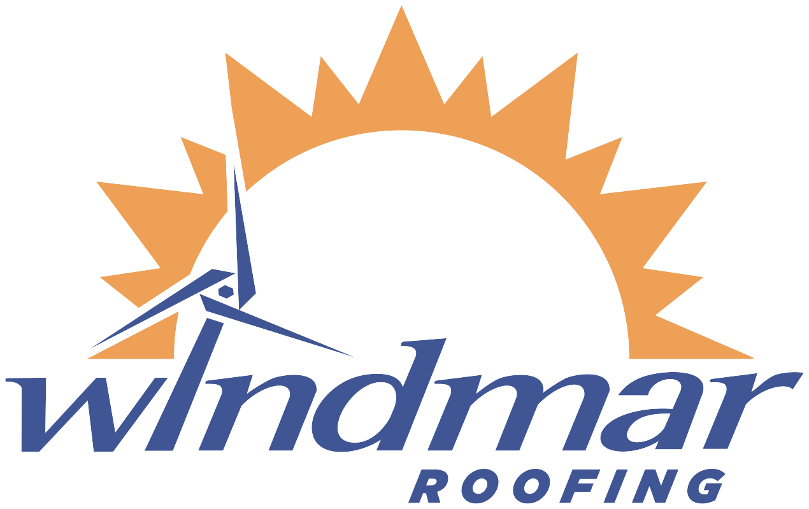

Antes
Roofing · Proceso paso a paso
La remoción
que
otros saltan
El secreto de un sellado que dura no es lo que va encima. Es cómo se prepara el techo antes de sellarlo.
WindMar Roofing
Remoción de techo
Paso 01 · 02 — Evaluamos y removemos
Lo viejo sale.
No se tapa.
Subimos y marcamos cada punto crítico —
antes de vender nada
.
La mayoría sella por encima de lo gastado. Nosotros
retiramos capa por capa
hasta la base.
Un techo sano empieza por
lo que se quita
, no por lo que se pone.
Remoción incluida — pocos la hacen
Paso 03 · 04 — Preparamos y sellamos
La base lo cambia todo
Superficie limpia, seca y firme. Luego aplicamos el sistema en el orden correcto, con el tiempo de secado de cada capa.
Sistema nuevo · de la base hacia arriba
Acabado
Capa de acabado
refleja el sol y protege
Imprimante (primer)
Imprimante · primer
agarre a la base
Losa preparada
Base limpia
del paso 03
Acabado parejo, sin burbujas ni desprendimientos
Después
El proceso completo
¿Listo para
restaurar tu techo?
Una evaluación gratis y te decimos exactamente qué necesita — sin compromiso.
Evaluación 100% gratis
Remoción incluida — pocos la hacen
Financiamiento disponible
Comenta ROOFING
windmar.com

 Después
Después